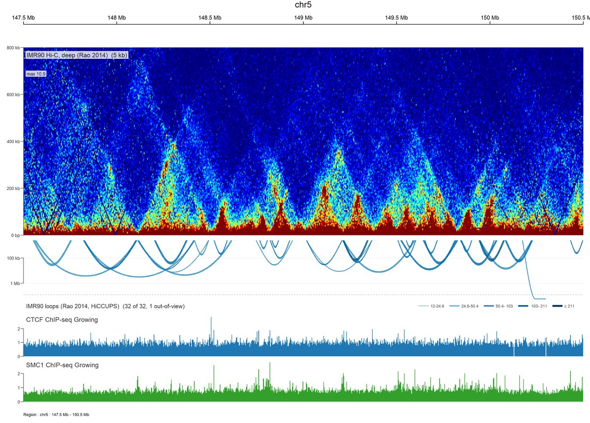

はじめての 5 分¶
公開データを集めたデモカタログを使って、HiCarta の基本操作を試してみましょう。カタログの読み込み → Hi-C マップの表示 → 移動・ズーム → トラックの追加 → ブックマークによる移動 → 図の出力 の 6 ステップで進めます。
データはすべてインターネット上にあるため、事前にダウンロードする必要はありません。HiCarta は .hic や bigWig から表示領域に必要な部分を読み込みます。
準備
HiCarta をインストールして起動しておいてください（インストール）。インターネットへの接続が必要です。
1. デモカタログを読み込む¶
- 画面上部の データ をクリックします。
-
データブラウザ タブの「カタログ (.xlsx) のパスまたは URL」の欄に、次の URL を貼り付けます。
https://uo-cgf.s3.us-west-2.amazonaws.com/HiCarta/demo/HiCarta_demo_catalog.xlsx -
カタログを読み込む をクリックします。
サンプルの一覧が表示されます。左側のフィルタを使い、生物種（organism）や実験の種類（experiment_type）などの項目で一覧を絞り込めます。カタログの中身は デモデータ を参照してください。
2. Hi-C マップを開く¶
- 一覧で IMR90 Hi-C, deep (Rao 2014) の行をクリックします。
- 表示された詳細画面で コンタクトマップとして開く をクリックします。
ヒト IMR90 細胞の高深度 Hi-C マップ（Rao et al., 2014）が開きます。
3. 移動とズーム¶
- ドラッグで移動し、マウスのホイールで拡大・縮小します。解像度は拡大率に応じて自動的に切り替わります。
- 見たい領域に直接移動するには、左の 移動 パネルで X 軸の染色体に
chr5を選び、開始座標に147500000、終了座標に150500000を入力して 領域へ移動 をクリックします。 - 色が薄い（濃い）ときは、表示 → マップ の 最大値 で調整します。
この領域では、マップ上に、ループに対応する点状のシグナルがいくつも見えます。
4. トラックを重ねる¶
データ からデータブラウザに戻り、次の行を順にクリックして、トラックとして追加 をクリックします。追加する前に、ラベル・色・高さを調整できます。
| 行 | 表示されるもの |
|---|---|
| IMR90 loops (Rao 2014, HiCCUPS) | ループを弧として表示 |
| CTCF ChIP-seq Growing | CTCF の ChIP-seq シグナル |
| SMC1 ChIP-seq Growing | コヒーシンの構成因子 SMC1 の ChIP-seq シグナル |
| Genes (GENCODE v19, protein-coding) | 遺伝子 |
さらに、IMR90 Hi-C, deep (Rao 2014) の行で 回転マップとして追加 をクリックすると、Hi-C マップを 45 度回転させた三角形のトラックとして表示できます。トラックの表示位置は Hi-C マップと連動します。

見やすくするには
- トラックの設定は、表示 → トラック に並んだトラックの名前をクリックすると変更できます。CTCF は最大値を 6、SMC1 は 8 程度にすると、ピークが見やすくなります。
- ループのトラックでは、「距離の上限 (bp)」を
2000000（2 Mb）にすると、この領域のループを表示できます。 - 正方形の Hi-C マップを隠して回転マップとトラックだけを表示するには、表示 → マップ の コンタクトマップを隠す（トラックのみ） を使います。
ループの両端（アンカー）と CTCF や SMC1 のピークとの位置関係を確認できます。
5. ブックマークで移動する¶
ダウンロードした HiCarta のフォルダの sample/HiCarta_demo_bookmarks_hg19.xlsx に、デモ用の領域と、老化に関わる遺伝子（SASP 遺伝子）のブックマークを用意しています。
- 移動 パネルのブックマーク欄を開き、Excel から読み込み（追加） の欄で 参照… からこのファイルを選び、読み込む をクリックします。
- 一覧から PDGFRB / CSF1R (chr5) をクリックすると、その領域に移動します。
ブックマークにはゲノム上の位置だけが記録されます。別のサンプルを開いても、同じブックマークで同じ領域に移動できます。
6. 図として出力する¶
- 画面上部の 印刷 を開き、印刷プレビューを開く をクリックします。
- 送信先を ファイル、フォーマットを PDF にして、出力フォルダとファイル名を指定します。
- トラックも出力する がオンになっていることを確認して、実行 をクリックします。
PDF では、Hi-C マップはラスター画像として、軸・ラベル・トラックは編集可能なベクター形式で保存されます。詳しくは 論文用の図を作る を参照してください。
次に読むページ¶
- 2 つの条件を比較する — デモカタログの分裂酵母の G2 期と分裂期の Hi-C マップを比較します。
- データカタログ — 自分のデータを使うためのカタログの書き方です。
sample/HiCarta_catalog_template.xlsxをコピーして使えます。 - できること — HiCarta の機能の一覧です。